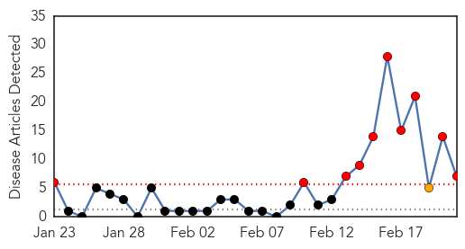

30 Day Trends
Web: 10 alerts, 1 warnings
Twitter: 0 alerts, 0 warnings
Top Articles:
- 0.967
- ‘Eat healthy to avoid jaundice & typhoid’
- 0.872
- Trinity Lutheran College pupils may have been exposed to contaminated Nanna’s frozen berries
- 0.800
- Get vaccinated for your trip to Ireland
- 0.752
- Finger-pointing, lawsuits likely to follow 'superbug' scare
- 0.736
- Lawsuits likely to follow ‘superbug’ scare
- 0.672
- Finger-Pointing, Lawsuits Likely To Follow ‘Superbug’ Scare « CBS Los Angeles
- 0.638
- Up to 450k could have eaten hepatitis A contaminated berries grown in China
Top Tweets:
-
No tweets found for Feb 21, 2015
Web/News Articles
Tweets